Río Tambo: imágenes Sentinel-2 candidatas
Criterio: antes del salto de focos del 4 oct y con pocas nubes en la zona (capa SCL), no en la escena entera.
2026-09-03 — nubes 7.0 %
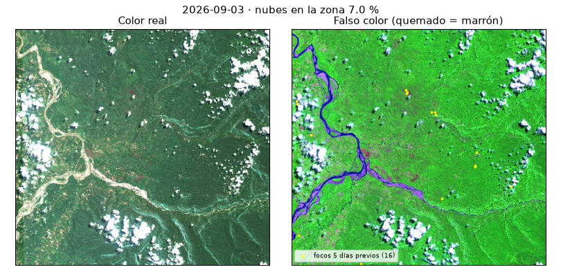
2026-09-08 — nubes 100.0 %
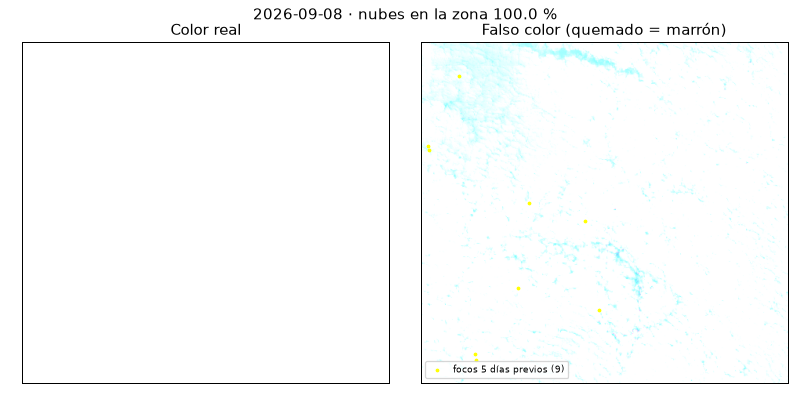
2026-09-10 — nubes 33.5 %
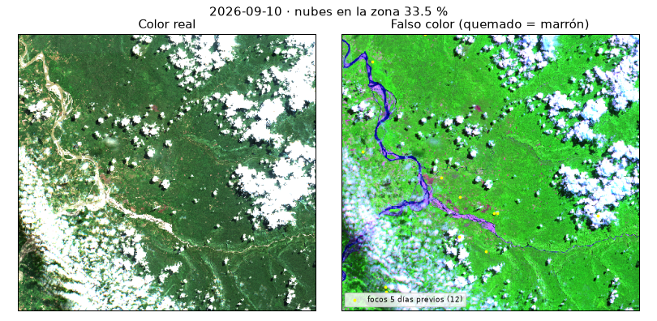
2026-09-13 — nubes 4.2 %
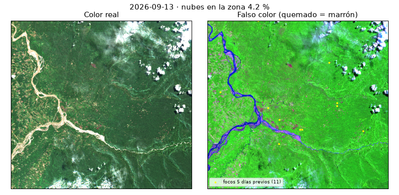
2026-09-18 — nubes 99.7 %
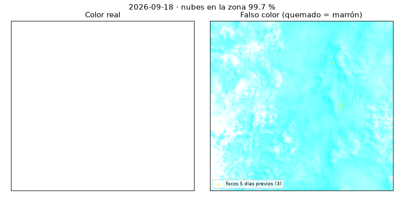
2026-09-20 — nubes 8.8 %
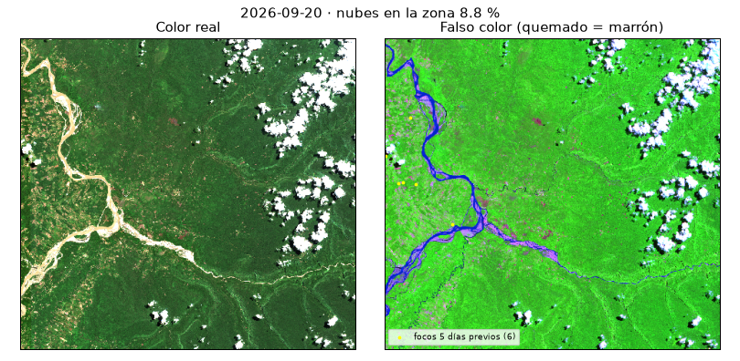
2026-09-23 — nubes 6.7 % · ANTES (elegida)
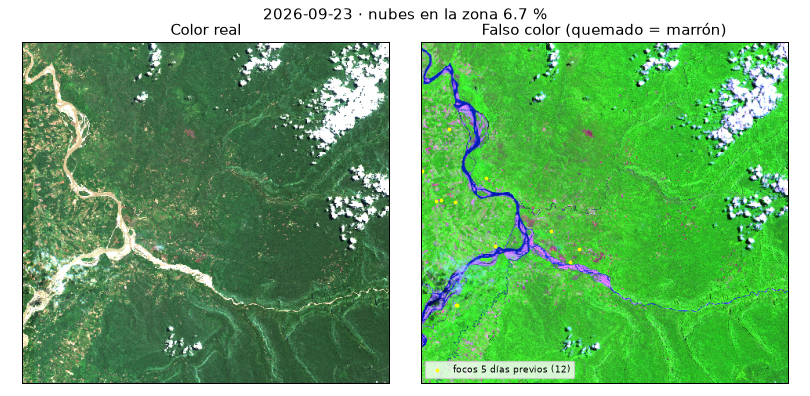
2026-09-28 — nubes 18.4 %
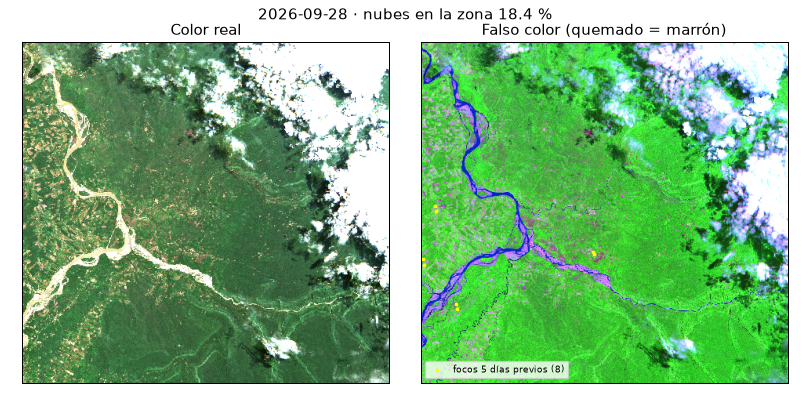
2026-09-30 — nubes 92.8 %
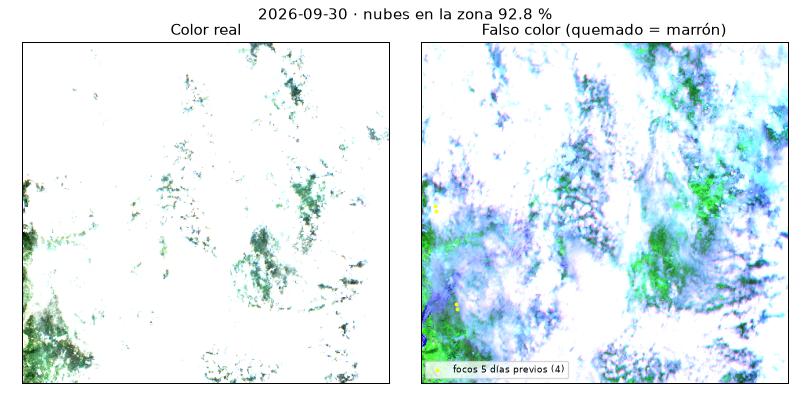
2026-10-03 — nubes 29.9 %
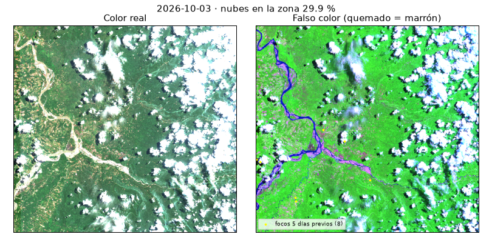
2026-10-08 — nubes 2.3 % · DESPUÉS (elegida)
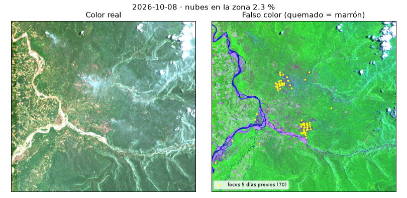
2026-10-10 — nubes 96.3 %
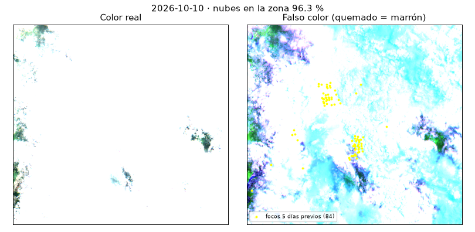
2026-10-13 — nubes 29.5 % · Sensibilidad
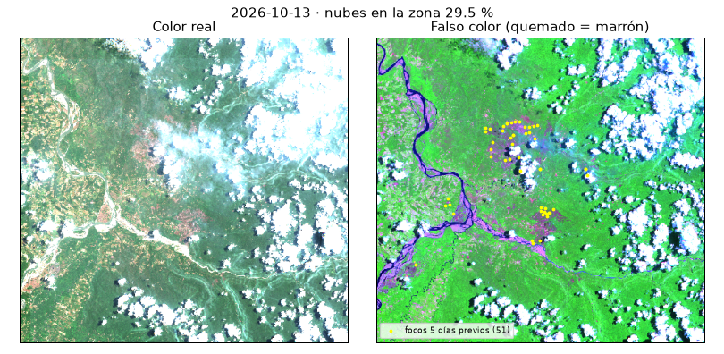
2026-10-18 — nubes 66.9 %
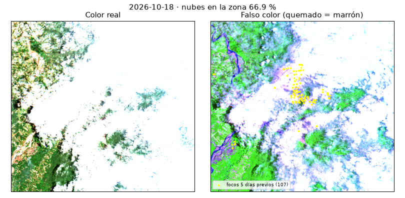
2026-10-20 — nubes 43.2 %
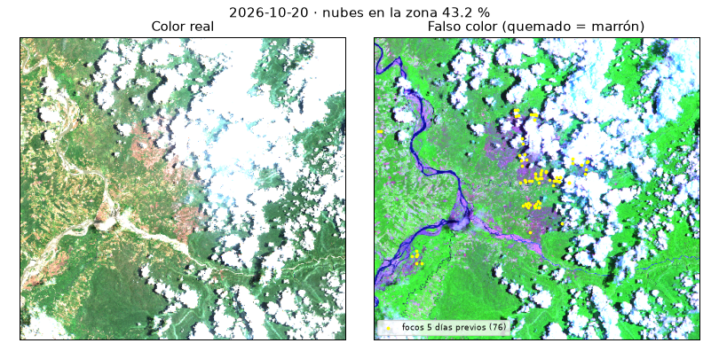